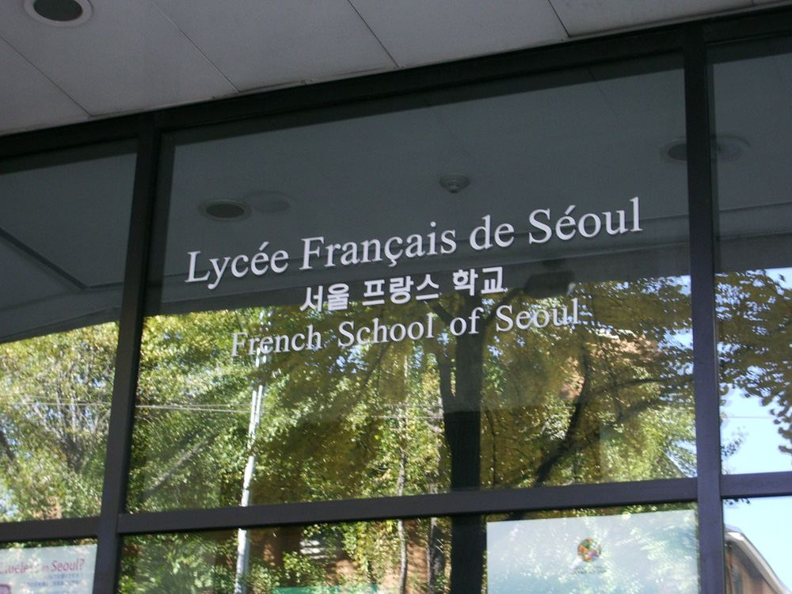
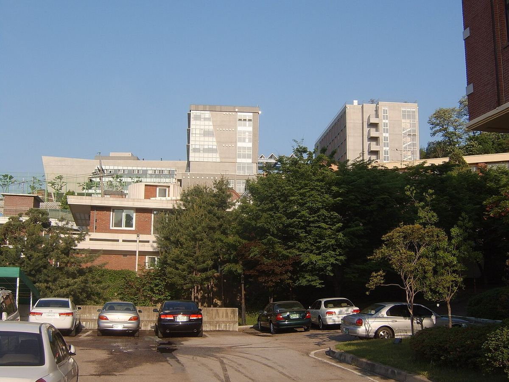
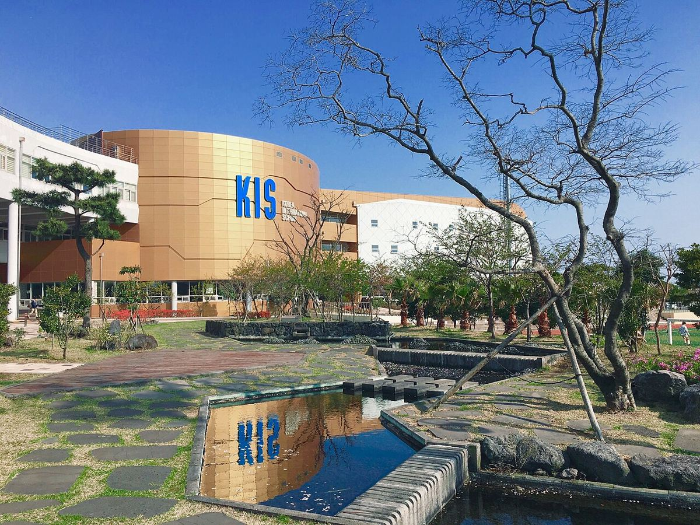

서울 11곳 · 서울 페이지 →
서울외국인학교 (SFS) 과외
Seoul Foreign School · IB 트랙·영국식 트랙 2개 운영(학교 공식 안내)
수학·영어·과학 1:1 화상과외 안내 →
서울용산국제학교 (YISS) 과외
Yongsan International School of Seoul · 미국식 커리큘럼
수학·영어·과학 1:1 화상과외 안내 →
드와이트 외국인학교 서울 과외
Dwight School Seoul · PYP·MYP·DP 전 과정 IB(IB 디렉토리 확인)
수학·영어·과학 1:1 화상과외 안내 →
한국외국인학교 서울캠퍼스 (KIS Seoul) 과외
Korea International School Seoul Campus · 초등 전용 캠퍼스(학교 공식 안내)
수학·영어·과학 1:1 화상과외 안내 →
덜위치 칼리지 서울 과외
Dulwich College Seoul · 영국식 커리큘럼, IGCSE 후 IB DP
수학·영어·과학 1:1 화상과외 안내 →
아시아퍼시픽국제외국인학교 (APIS) 과외
Asia Pacific International School · K-12
수학·영어·과학 1:1 화상과외 안내 →
한국켄트외국인학교 (KKFS) 과외
Korea Kent Foreign School · 미국식 커리큘럼
수학·영어·과학 1:1 화상과외 안내 →

교육과정 상담 때 확인서울 공식 출처 확인서울프랑스학교 (LFS) 과외
Lycée Français de Séoul · 프랑스 교육과정, 영어 섹션(SIA) 운영
수학·영어·과학 1:1 화상과외 안내 →
서울독일학교 (DSSI) 과외
Deutsche Schule Seoul International · 독일 아비투어 과정
수학·영어·과학 1:1 화상과외 안내 →
하비에르 국제학교 과외
Xavier International School
수학·영어·과학 1:1 화상과외 안내 →

교육과정 상담 때 확인서울서울국제고등학교 과외
Seoul Global High School · 공립 국제고
수학·영어·과학 1:1 화상과외 안내 →
경기 성남 2곳 · 경기 성남 페이지 →
서울국제학교 (SIS) 과외
Seoul International School · AP 과목 24개(학교 공식 안내)
수학·영어·과학 1:1 화상과외 안내 →
한국외국인학교 판교 (KIS Pangyo) 과외
Korea International School Pangyo · PK~12, AP 과목 26개(학교 공식 안내)
수학·영어·과학 1:1 화상과외 안내 →
경기 수원 1곳 · 경기 수원 페이지 →
경기 가평 1곳 · 경기 가평 페이지 →
경기 고양 1곳 · 경기 고양 페이지 →
경기 화성 1곳 · 경기 화성 페이지 →
경기 평택 1곳 · 경기 평택 페이지 →
인천 송도 1곳 · 인천 송도 페이지 →
인천 청라 1곳 · 인천 청라 페이지 →
인천 1곳 · 인천 페이지 →

제주 영어교육도시 4곳 · 제주 영어교육도시 페이지 →
NLCS 제주 과외
North London Collegiate School Jeju · IGCSE(Year 10~11) 후 IB DP(Year 12~13)
수학·영어·과학 1:1 화상과외 안내 →
 IB DP제주 영어교육도시 공식 출처 확인
IB DP제주 영어교육도시 공식 출처 확인
브랭섬홀 아시아 (BHA) 과외
Branksome Hall Asia · IB 학교(IB 디렉토리 확인)
수학·영어·과학 1:1 화상과외 안내 →

AP제주 영어교육도시 공식 출처 확인한국국제학교 제주 (KIS Jeju) 과외
Korea International School Jeju · 미국식 커리큘럼
수학·영어·과학 1:1 화상과외 안내 →
세인트존스베리 아카데미 제주 (SJA Jeju) 과외
St. Johnsbury Academy Jeju · 미국식 커리큘럼
수학·영어·과학 1:1 화상과외 안내 →
대전 1곳 · 대전 페이지 →
대구 1곳 · 대구 페이지 →
부산 3곳 · 부산 페이지 →
부산외국인학교 (BFS) 과외
Busan Foreign School · 미국식 커리큘럼
수학·영어·과학 1:1 화상과외 안내 →
부산국제외국인학교 (BIFS) 과외
Busan International Foreign School · IB 학교
수학·영어·과학 1:1 화상과외 안내 →
부산국제고등학교 과외
Busan International High School · 공립 국제고
수학·영어·과학 1:1 화상과외 안내 →